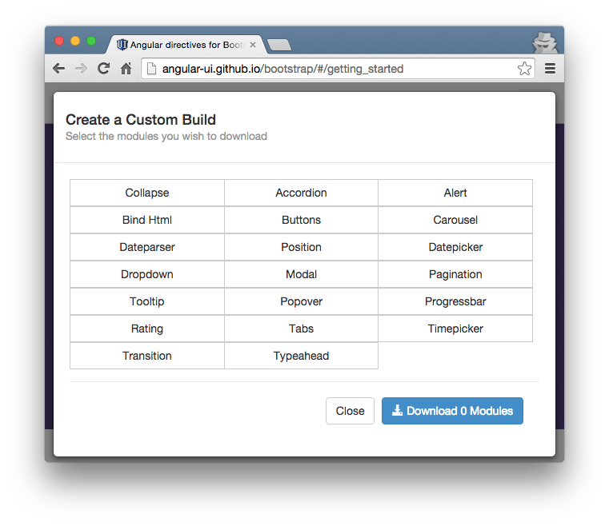
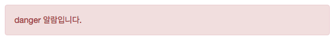
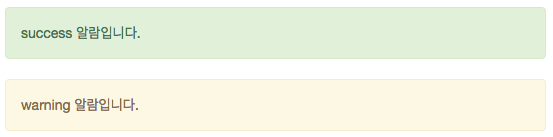
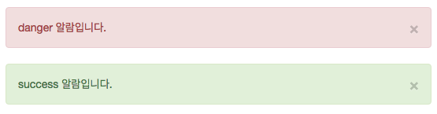
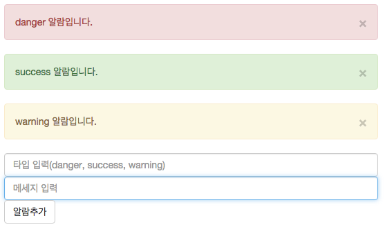

UI-Bootstrap 시작하기
UI-Bootstrap이란?
트위터에서 공개한 트위터 부트스트랩(Twitter Bootstrap)은 웹 프론트엔트 UI 작업시 가장 인기있는 라이브러리 중 하나이다. 앵귤러 UI 팀에서는 이러한 부트스트랩 라이브러리를 앵귤러 디렉티브로 만들기 위한 UI-Bootstrap 프로젝트(UI Bootstrap)를 진행하고 있다. 2013년에 개발하기 시작하여 2015년 현재는 0.13.0 버전을 공개했다.
트위터 부트스트랩 컴포넌트 중 자바스크립트 연동이 필요한 컴포넌트를 앵귤러 디렉티브로 모듈화하였다. UI-Bootstrap을 사용하면 템플릿 코드에서 디렉티브 선언만으로 부트스트랩 컴포넌트를 구현할 수 있다. 이러한 특징은 코드를 간결하게 유지할 뿐만아니라 선언형 프로그래밍의 특징을 활용하여 로직을 모듈화 할 수 있다는 장점이 있다.
본 글에서는 트위터 부트스트랩을 앵귤러 스타일에 맞게 구성한 구성한 UI-Bootstrap 라이브러리의 구성을 살펴보고, 설치 방법에 대해 알아본다. 그리고 많이 사용하는 컴포넌트 중 하나인 알럿(alert) 컴포넌트의 사용방법과 활용에 대해 살펴본다.
구성
UI Bootstrap은 트위터 부트스트랩의 컴포넌트 구성과 매우 유사하다.
- Accordion: 아코디언 디렉티브
- Alert: 알럿 메세지 디렉티브
- Carousel: 캐러셀(슬라이드) 디렉티브
- Callapse: 컬랩스 디렉티브. 엘러맨트 요소를 숨기거나 보일수 있다.
- Dropdown: 드랍다운 메뉴 디렉티브
- Modal: 모달(팝업창) 디렉티브
- Pagination: 페이지네이션 디렉티브
- Popover: 팝오버 디렉티브
- Progressbar: 프로그래스바(진행 상태바) 디렉티브
- Tabs: 탭 디렉티브
- Tooltip: 툴팁 디렉티브
다음은 UI-Bootstrap에서 별로도 제공하는 컴포넌트 목록이다.
- Buttons: 버튼그룹 디렉티브. 라디오박스, 체크박스 기능을 제공한다.
- Datepicker: 데이트 픽커(날짜 선택) 디렉티브
- Timepicker: 타임픽커(시간 선택) 디렉티브
- Rating: 래이팅 디렉티브. 별점 주는 용도로 활용할 수 있다.
- Typeahead: 타입어헤드 디렉티브. 자동완성 필드에 활용할 수 있다.
설치
UI-Bootstrap을 사용하기 위해 앵귤러 라이브러리 로딩을 선행해야한다. 앵귤러 라이브러리 설치는 본 글의 범위에 벗어난 것이므로 GetStarted의 AngularJS를 참고하기 바란다.
UI-Bootstrap은 세 가지 방법으로 설치할수 있다.
방법1. 직접 다운로드
UI-Bootstrap 사이트에 접속하여 상단 Download 버튼을 클릭하면 라이브러리 소스코드를 다운로드 할 수 있다. 다운로드 파일은 두 가지 타입이 있는데 Minified는 자바크립트 압축을 한 최소화된 버전이고 Uncompressed는 일반 버전이다.
방법2. 필요한 모듈만 다운로드
UI-Bootstrap 사이트에서는 사용자가 필요한 컴포넌트만 선택하여 다운받을 수 있도록 기능을 제공한다. 사이트 상단의 Create a Build 버튼을 클릭하면 아래 모달창을 볼 수 있다.

라이브러리에서 제공하는 디렉티브 목록이 보이고 이들 중 필요한 것만 선택한 뒤 다운로드 버튼을 클릭하면 압축파일 형태로 다운로드 받을 수 있다. 사이트 성능 최적화를 위해 라이브러리 용량을 최소화하여 사용하는 것이 좋다.
방법3. Bower
자바스크립트 라이브러리 관리툴은 Bower를 사용한다면 훨씬 간단하게 추가할 수 있다.
$ bower install --save angular-bootstrap
위 세가지 방법중 하나로 라이브러리를 다운로드 했으면 템플릿 파일에 라이브러리를 로딩해야 한다.
<script src="bower_components/angular-bootstrap/ui-bootstrap-tpls.js"></script>
앵귤러 모듈을 사용하기 위해서는 모듈 주입이라는 설정을 해야한다. UI-Bootstrap에서 사용하는 모듈명은
ui-bootstrap이다. 아래와 같이 기존 모듈에 주입할 수 있다.
angular.module('demo', ['ui-bootstrap']);
이것으로 UI-Bootstrap에서 제공하는 모듈을 사용하기위한 준비를 마쳤다.
사용법
템플릿에서의 선언
Alert을 생성하는 디렉티브인 alert 디렉티브를 살펴보자. 이 디렉티브를 사용하면 디렉티브 선언만으로 간단하게 alert을 만들 수 있다.
<alert type="danger">danger alert 입니다</alert>

type은 색상별로 success, warning을 사용할수 있다.

alert 디렉티브를 통해 생성되는 엘레멘트를 살펴보면 type 속성값에 따라 클래스명이 동적으로 붙게 된다.
type="danger"일 경우 .alert-danger 클래스가 붙고 type="warning"일 경우
.alter-warning 클래스가 붙는 규칙이다. 만약 type="custom"이라고 선언하면
.alert-custom 클래스가 붙게 될 것이다. 이러한 특징을 활용하여 커스텀 색상의 alert을 만들 수도
있다.
그럼 deepskyblue 색상의 alert을 만들어 보자. 템플릿에서 type="deepbluesky"인
alert을 선언한다.
<alert type=”deepbluesky”>danger 알람입니다</alert>
스타일시트에서는 .alert-deepskyblue 클래스를 정의한다.
.alert-deepskyblue {
background-color: deepskyblue;
border-color: darkblue;
}
이렇게 type 속성과 클래스 정의를 이용하여 커스텀 alert을 만들수 있다.

컨트롤러 데이터와 바인딩
앵귤러를 사용하는 장점 중의 하나는 컨트롤러를 통한 템플릿과의 데이터 바인딩이다. 컨트롤러의 스코프 변수에 alert을 위한 데이터를 정의하고 이것을 템플릿에서 연결하여 alert을 동적으로 생성/삭제할 수 있다.
컨트롤러 코드를 먼저 살펴보자. 컨트롤러에서는 {type: "", msg: ""} 객체를 정의하여 alert 데이터
객체 배열을 생성한다.
angular.module('demo').controller('DemoCtrl', function($scope) {
$scope.alerts = [{
type: 'danger',
msg: 'danger 알람입니다.'
}, {
type: 'success',
msg: 'success 알람입니다.'
}];
});
사용자 입력에 따라 alert을 추가하기 위해 addAlert() 함수를 만들고 스코프 변수에 저장한다.
$scope.addAlert = function(alert) {
// alert 파라매터가 비었을 경우 기본 값을 설정한다.
alert = alert || {
type: 'warning',
msg: 'warning 알람입니다'
};
alert.type = alert.type || 'warning';
alert.msg = alert.msg || 'warning 알람입니다';
// 배열에 alert 객체를 추가한다.
$scope.alerts.push(alert);
$scope.type = $scope.msg = '';
};
Alert 우측 상단의 x버튼을 클릭하여 해당 alert을 삭제하기 위한 clseAlert() 함수도 만들어 스코프
변수에 저장한다.
$scope.closeAlert = function(index) {
$scope.alerts.splice(index, 1);
};
위와 같이 컨트롤러를 구성한 다음 템플릿에 이 컨트롤러를 연결한다. 앵귤러 컨트롤러를 템플릿과 연결하여 스코프
변수를 사용하기 위해서는 1) ng-app="모듈명" 디렉티브를 이용하여 앵귤러를 사용을 명시한다.
<html ng-app="demo">
2) 그리고 컨트롤러를 연결을 위해 엘레멘트에 ng-controller="컨트롤러명" 디렉티브를 추가한다.
<div ng-controller="DemoCtrl">
이제 컨트롤러에서 정의한 $scope 변수를 사용하여 alert를 생성해보자.
<alert ng-repeat="alert in alerts" type="" close="closeAlert($index)"></alert>
컨트롤러 스코프 변수에 저장된 $scope.alerts 배열을 ng-repeat 디렉티브로 순회하면서 alert
엘레멘트를 생성한다. 그리고 close 속성에 closeAlert($index) 함수를 바인딩하여 클릭시 알람을 제거
하도록 하였다. 여기까지 작성하면 템플릿은 아래와 같이 alert을 생성한다.

사용자 입력에 따른 Alert 추가
이번엔 사용자가 alert을 추가하는 기능을 구현해보자. 폼을 정의하여 사용자 입력을 처리한다.
<form name="form" ng-submit="addAlert({type: type, msg: msg})">
<input class="form-control" type="text" name="type" ng-model="type" placeholder="타입 입력(danger, success, warning)" />
<input class="form-control" type="text" name="msg" ng-model="msg" placeholder="메세지 입력" />
<button class='btn btn-default' type="submit">알람추가</button>
</form>
폼을 정의하고 type 필드와 msg 필드 값을 가지고 alert을 생성한다. 폼이 제출될때 addAlert() 함수가
동작하게 바인딩 하였다. 컨트롤러에서 정의한 Addalert() 함수가 동작하면 $scope.alerts 배열에
사용자가 입력한 값이 추가된다. ng-repeat은 이를 감지하여 다시 추가된 alert을 생성한다.

전체코드는 Plunker 코드를 참고하자.
마치며
트위터 부트스트랩은 서비스 프로토타입 뿐만 아니라 상용 서비스에서도 종종 활용되고 있다. 앵귤러 프레임웍에서도 부트스트랩 라이브러리를 직접 가져다 사용할 수도 있다. 그러나 선언형 프로그래밍, 모듈화 등 앵귤러의 장점을 유지하고 싶다면 앵귤러 스타일의 프로그래밍이 필요하다. UI-Bootstrap은 이러한 점에서 개발자에게 유용하다. 트위터 부트스트랩 라이브러를 필요에 따라 개선하여 사용할 수도 있지만 바퀴를 다시 만들 필요는 없지 않은가? 현재 0.13.1 버전이라 상용 코드로 활용하기에는 불안한 감도 없지 않지만 빠르게 적용할 수 있다는 점에서는 훌륭한 라이브러리라고 생각한다.